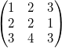
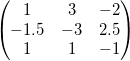

内容 |
解析：数学：逆行列
逆行列を生成
1. minverse;
2. minverse im:=[MBook1]Msheet1!Mat(1);
3. minverse im:= [MBook1]Msheet1!Mat(1) om:=[MBook1]Msheet1!Mat(2);
| 表示名 | 変数名 | I/O と データ型 |
デフォルト値 | 説明 |
|---|---|---|---|---|
| 入力行列 | im |
入力 MatrixObject |
|
入力行列 |
| 出力行列 | om |
出力 MatrixObject |
|
出力逆行列 シンタックスはここをご覧ください。 |
3行3列の行列:

コマンドウィンドウにminverseと入力すると:

詳細は、ユーザガイドのこのページ を参照して下さい